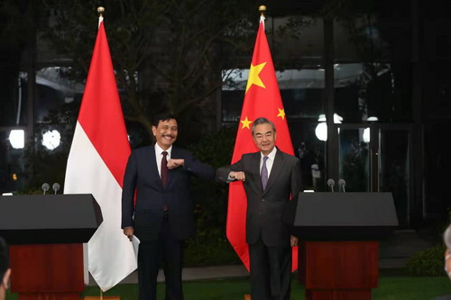

.png)

Kerjasama: 4WD Indonesia dan Tiongkok
Tujuan: Meningkatkan perekonomian Indonesia dengan bantu kerjasama Tiongkok
Kasus: Presiden Joko Widodo melaksanakan pertemuan bilateral dengan Perdana Menteri Republik Rakyat Tiongkok (RRT) H.E. Li Qiang di Istana Merdeka, Jumat (8/09). Dalam pertemuan tersebut, dibahas tentang perkembangan kerja sama antara RI dengan RRT sebagai tindak lanjut pertemuan terakhir presiden Jokowi dengan presiden Xi Jinping pada Juli 2023 lalu di Chengdu. Kerja sama ini mencakup perkembangan kerja sama investasi, perdagangan, pembangunan infrastruktur, kesehatan, dan kemitraan kawasan maupun global. Dalam bidang investasi, dibahas rencana Contemporary Amperex Technology Co Limited (CATL) untuk pengembangan produksi baterai EV terintegrasi, pembangunan industri petrokimia dengan perusahaan Tongkun dan Xingfengmin, dan pembangunan pabrik kaca Xinyi, serta membahas terkait Two Countries Twin Parks yang dapat menjadi sebuah jembatan investasi manufaktur dan penguatan akses pasar untuk perusahaan Indonesia dan Tiongkok. Selain itu, dalam pertemuan ini, Menko Airlangga bersama dengan Menteri Perdagangan RRT, Wang Wentao melakukan penandatanganan Memorandum of Understanding (MoU) between the Republic of Indonesia and the People’s Republic of China on E-Commerce Cooperation. Dalam pertemuan ini, Menko Airlangga menuntun bahwa MoU ini mempromosikan perdagangan produk Usaha Kecil Menengah (UKM) melalui perdagangan elektronik, paperless trading, layanan pembayaran lintas batas, penerapan big data dan Kecerdasan Buatan (AI/Artificial Intelligence) serta mengintegrasi Internet of Things (IoT). Dalam pertemuan ini, mereka juga membahas tentang infrastruktur dimana dibahas peresmian dan operasional Kereta Cepat Jakarta-Bandung serta kerja sama pembangunan Ibu Kota Nusantara. Keuda negara mendorong adanya implementasi konkret pembentukan kerja sama baru antara Otoritas IKN dan Shenzhen untuk perencanaan pembangunan kota.